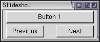

XBL Example
This section will describe an example XBL element.
A Slideshow Element
Let's construct a full example of an XBL element. This will be a widget that stores a deck of objects, each displayed one at a time. Navigation buttons along the bottom will allow the user to cycle through the objects while a text widget between the buttons will display the current page. You could put anything within the pages, however, this widget might be useful for a set of images. We'll call this a slideshow element.
First, let's determine what elements need to go in the XBL content. Because we want page flipping, a deck element would be the most suitable to hold the page content. The content of the pages will be specified in the XUL file, not in XBL, but we'll need to add it inside the deck. The children tag will need to be used. Along the bottom, we'll need a button to go the previous page, a text widget to display the current page number, and a button to go to the next page.
Example 11.8.1: Source<binding id="slideshow">
<content>
<xul:vbox flex="1">
<xul:deck xbl:inherits="selectedIndex" selectedIndex="0" flex="1">
<children/>
</xul:deck>
<xul:hbox>
<xul:button xbl:inherits="label=previoustext"/>
<xul:label flex="1"/>
<xul:button xbl:inherits="label=nexttext"/>
</xul:hbox>
</xul:vbox>
</content>
</binding>This binding creates the slideshow structure that we want. The flex attribute has been added to a number of elements so that it stretches in the right way. The label attributes on the two buttons inherit their values from the bound element. Here, they inherit from two custom attributes, previoustext and nexttext. This makes it easy to change the labels on the buttons. The children of the element that the XBL is bound to will be placed inside the deck. The selectedIndex is inherited by the deck, so we may set the initial page in the XUL.
The following XUL file produces the result in the image.
<box class="slideshow" previoustext="Previous" nexttext="Next" flex="1"> <button label="Button 1"/> <checkbox label="Checkbox 2"/> <textbox/> </box>
The style sheet used here is:
.slideshow {
-moz-binding: url("slideshow.xml#slideshow");
} The first button, 'Button 1' has been used as the first page of the deck. The label widget has not appeared as no value has been specified for it. We could set a value, but instead it will calculated later.
Next, a property that holds the current page will be added. When getting this custom property, it will need to retrieve the value of the selectedIndex attribute of the deck, which holds the number of the currently displayed page. Similarly, when setting this property, it will need to change the selectedIndex attribute of the deck. In addition, the text widget will need to be updated to display which page is the current one.
<property name="page"
onget="return parseInt(document.getAnonymousNodes(this)[0].childNodes[0].getAttribute('selectedIndex'));"
onset="return this.setPage(val);"/>The 'page' property gets its value by looking at the first element of the anonymous array. This returns the vertical box, so to get the deck, we need to get the first child node of the box. The anonymous array isn't used as the deck is not anonymous from the box. Finally, the value of the selectedIndex attribute is retrieved. To set the page, a method 'setPage' is called which will be defined later.
An oncommand handler will need to be added to the Previous and Next buttons so that the page is changed when the buttons are pressed. Conveniently, we can change the page using the custom 'page' property that was just added:
<xul:button xbl:inherits="label=previoustext"
oncommand="parentNode.parentNode.parentNode.page--;"/>
<xul:description flex="1"/>
<xul:button xbl:inherits="label=nexttext"
oncommand="parentNode.parentNode.parentNode.page++;"/>Because the 'page' property is only on the outer XUL element, we need to to use the parentNode property to get to it. The first parentNode returns the parent of the button which is the horizontal box, the second its parent, the vertical box, and finally, its parent which is the outer box. The 'page' property is incremented or decremented. This will call the onget script to get the value, increment or decrement the value by one, and then call the onset handler to set the value.
Now let's define the 'setPage' method. It will take one parameter, the page number to set the page to. It will need to make sure the page is not out of range and then modify the deck's selectedIndex attribute and the text widget's label attribute.
<method name="setPage">
<parameter name="newidx"/>
<body>
<![CDATA[
var thedeck=document.getAnonymousNodes(this)[0].childNodes[0];
var totalpages=this.childNodes.length;
if (newidx<0) return 0;
if (newidx>=totalpages) return totalpages;
thedeck.setAttribute("selectedIndex",newidx);
document.getAnonymousNodes(this)[0].childNodes[1].childNodes[1]
.setAttribute("value",(newidx+1)+" of "+totalpages);
return newidx;
]]>
</body>
</method>This function is called 'setPage' and takes one parameter 'newidx'. The body of the method has been enclosed inside '<![CDATA[' and ']]>'. This is the general mechanism in all XML files that can be used to escape all of the text inside it. That way, you don't have to escape every less-than and greater-than sign inside it.
Let's break down the code piece by piece.
var thedeck=document.getAnonymousNodes(this)[0].childNodes[0];
Get the first element of the anonymous content array, which will be the vertical box, then get its first child, which will be the deck element.var totalpages=this.childNodes.length;
Get the number of children that the bound box has. This will give the total number of pages that there are.if (newidx<0) return 0;
If the new index is before the first page, don't change the page and return 0. The page should not change to a value earlier than the first page.if (newidx>=totalpages) return totalpages;
If the new index is after the last page, don't change the page and return the last page's index. The page should not change to one after the last page.thedeck.setAttribute("selectedIndex",newidx);Change the selectedIndex attribute on the deck. This causes the requested page to be displayed.document.getAnonymousNodes(this)[0].childNodes[1].childNodes[1].setAttribute("value",(newidx+1)+" of "+totalpages);This line modifies the label element so that it displays the current page index. The label element can be retrieved by getting the first element of anonymous content (the vertical box), the second child of that label element (the horizontal box), and then the second element of that box. The value attribute is changed to read '1 of 3' or something similar. Note that one is added to the index because indicies start at 0.
We will also need a constructor to initialize the label element so that it displays correctly when the slideshow is first displayed. We use similar code as to the method above to set the page number. The reference to 'this.page' will call the onget script of the page property, which in turn will retrieve the initial page from the selectedIndex attribute.
<constructor>
var totalpages=this.childNodes.length;
document.getAnonymousNodes(this)[0].childNodes[1].childNodes[1]
.setAttribute("value",(this.page+1)+" of "+totalpages);
</constructor>We can add some additional features as well. Some keyboard shortcuts could be used for the Previous and Next buttons, (say backspace and the Enter key). First and Last buttons could be added to go to the first and last pages. The label element could be changed to a field where the user could enter the page to go to, or a popup could be added to allow selection of the page from a menu. We could also add a border around the deck with CSS to make it look a bit nicer.
The final code is as follows:
Example 11.8.2: Source<binding id="slideshow">
<content>
<xul:vbox flex="1">
<xul:deck xbl:inherits="selectedIndex" selectedIndex="0" flex="1">
<children/>
</xul:deck>
<xul:hbox>
<xul:button xbl:inherits="label=previoustext"
oncommand="parentNode.parentNode.parentNode.page--;"/>
<xul:description flex="1"/>
<xul:button xbl:inherits="label=nexttext"
oncommand="parentNode.parentNode.parentNode.page++;"/>
</xul:hbox>
</xul:vbox>
</content>
<implementation>
<constructor>
var totalpages=this.childNodes.length;
document.getAnonymousNodes(this)[0].childNodes[1].childNodes[1]
.setAttribute("value",(this.page+1)+" of "+totalpages);
</constructor>
<property name="page"
onget="return parseInt(document.getAnonymousNodes(this)[0].childNodes[0].getAttribute('selectedIndex'));"
onset="return this.setPage(val);"/>
<method name="setPage">
<parameter name="newidx"/>
<body>
<![CDATA[
var thedeck=document.getAnonymousNodes(this)[0].childNodes[0];
var totalpages=this.childNodes.length;
if (newidx<0) return 0;
if (newidx>=totalpages) return totalpages;
thedeck.setAttribute("selectedIndex",newidx);
document.getAnonymousNodes(this)[0].childNodes[1].childNodes[1]
.setAttribute("value",(newidx+1)+" of "+totalpages);
return newidx;
]]>
</body>
</method>
</implementation>
</binding>(Next) Next, we'll see some additional features of a window.